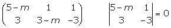

Ejercicios de puntos en el espacio
1Las coordenadas de los vértices consecutivos de un paralelogramo son A (1, 0, 0) y B(0, 1, 0). Las coordenadas del centro M son M(0, 0, 1). Hallar las coordenadas de los vértices C y D.
2Dado el triángulo de vértices A(2, 3, 4), B(1, −1, 5) y C(5, 5, 4), hallar:
1Las ecuaciones de las medianas del triángulo
2Las coordenadas del baricentro del triángulo.
3Las coordenadas del baricentro del triángulo cuyos vértices son los puntos medios de los lados del triángulo anterior.
3Hallar la ecuación de la recta que pasa por los puntos A (2, 3, 4) y B(8, −2, 3). Estudiar si el punto C(2, 1, 3) está alineado con A y B.
4Determinar los valores de m para que los puntos A(m, 2, −3), B(2, m, 1) y C(5, 3, −2) estén alineados y hallar las ecuaciones de la recta que los contiene.
5Determinar el valor de x para que los puntos A(0, 0, 1), B(0, 1, 2), C(−2, 1, 3) y D(x, x-1, 2) sean coplanarios.
6¿Qué en relación se ha de verificar entre los parámetros a, b y c para que los puntos A(1, 0, 1), B(1, 1, 0), C(0, 1, 1) y D(a, b, c) sean coplanarios?
7Calcular el valor de a para que los puntos (a, 0, 1), (0, 1, 2), (1, 2, 3) y (7, 2, 1) sean coplanarios. Calcular también la ecuación del plano que los contiene.
- 1
- 2
- 3
- 4
- 5
- 6
- 7
Ejercicio 1 resuelto
Las coordenadas de los vértices consecutivos de un paralelogramo son A (1, 0, 0) y B(0, 1, 0). Las coordenadas del centro M son M(0, 0, 1). Hallar las coordenadas de los vértices C y D.
Ejercicio 2 resuelto
Dado el triángulo de vértices A(2, 3, 4), B(1, −1, 5) y C(5, 5, 4), hallar:
1Las ecuaciones de las medianas del triángulo
2Las coordenadas del baricentro del triángulo.
3Las coordenadas del baricentro del triángulo cuyos vértices son los puntos medios de los lados del triángulo anterior.
Los baricentros de los dos triángulos coinciden.
Ejercicio 3 resuelto
Hallar la ecuación de la recta que pasa por los puntos A (2, 3, 4) y B(8, −2, 3). Estudiar si el punto C(2, 1, 3) está alineado con A y B.
Para que el punto C este alineado con A y B, debe pertenecer a la recta que pasa por A y B.
Como C no satisface las ecuaciones de la recta, no está alineado con A y B.
Ejercicio 4 resuelto
Determinar los valores de m para que los puntos A(m, 2, −3), B(2, m, 1) y C(5, 3, −2) estén alineados y hallar las ecuaciones de la recta que los contiene.
·


Ejercicio 5 resuelto
Determinar el valor de x para que los puntos A(0, 0, 1), B(0, 1, 2), C(−2, 1, 3) y D(x, x-1, 2) sean coplanarios.
Para que los puntos sean coplanarios, los vectores determinados por ellos también han de ser coplanarios, es decir, que el rango de los vectores sea 2.


Para que el rango sea igual a 2, el determinante de las componentes de los vectores ha de ser igual a cero.

Ejercicio 6 resuelto
¿Qué en relación se ha de verificar entre los parámetros a, b y c para que los puntos A(1, 0, 1), B(1, 1, 0), C(0, 1, 1) y D(a, b, c) sean coplanarios?
Los puntos A, B, C y D son coplanarios si:

Ejercicio 7 resuelto
Calcular el valor de a para que los puntos (a, 0, 1), (0, 1, 2), (1, 2, 3) y (7, 2, 1) sean coplanarios. Calcular también la ecuación del plano que los contiene.


 Ejercicios
Ejercicios